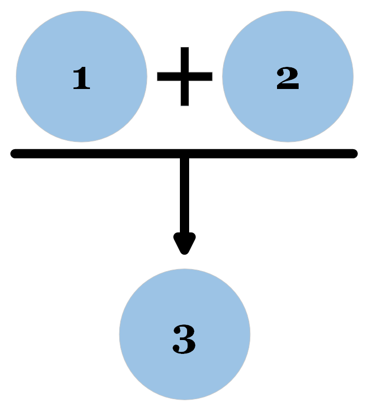
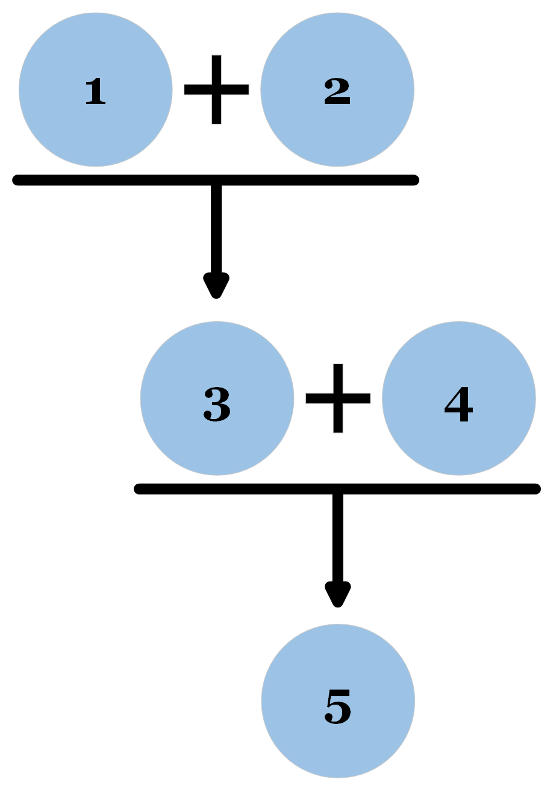
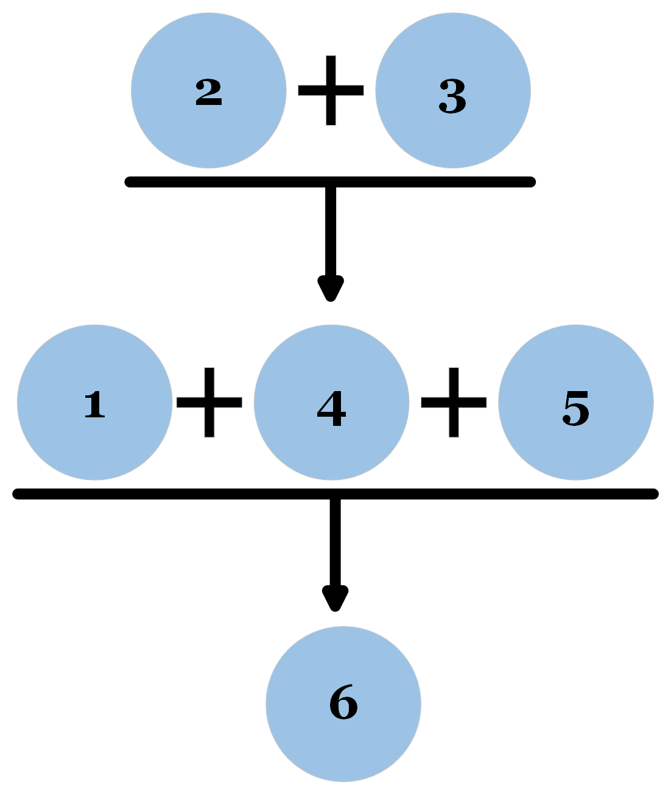
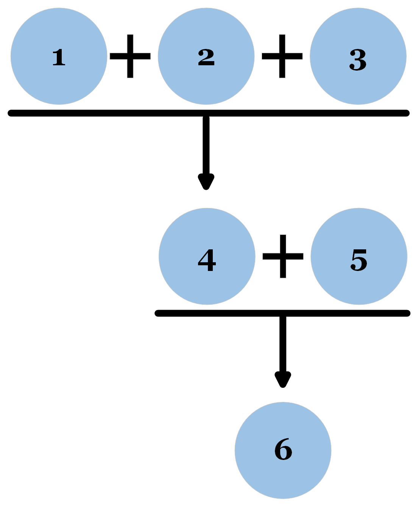

Step 1) Identify the premise(s) and conclusion(s) in standard form.
Step 2) Omit any extraneous details—e.g. repetition, tangents, guarding terms, assuring terms.
Step 3) Clarify where necessary. E.g. Replace pronouns with proper nouns, split up sentences.
Step 4) Represent the parts of the argument in a chain or tree.
Step 5) Assess each argument and subargument for validity. Add suppressed premises if necessary.
Step 6) Assess the truth of the premises.
Initial Reconstruction:
1. Our Paleolithic ancestors didn’t eat a lot of grains.
∴ 2. You shouldn’t eat a lot of grains.
Invalid. We can add a suppressed premise to make it valid.
Second Reconstruction:
1. Our Paleolithic ancestors didn’t eat a lot of grains.
2. You should eat how our Paleolithic ancestors ate.
∴ 3. You shouldn’t eat a lot of grains.
Argument Diagram:

Initial Reconstruction:
1. White lies are lies.
∴ 2. White lies are wrong.
Invalid. We can add a suppressed premise to make it valid.
Second Reconstruction:
1. White lies are lies.
2. All lies are wrong.
∴ 3. White lies are wrong.
Argument Diagram:
Initial Reconstruction:
1. Throughout history global temperature has always risen and fallen.
∴ 2. Humans can’t be causing global warming.
Invalid. We can add a suppressed premise to make it valid.
Second Reconstruction:
1.Throughout history global temperature has always risen and fallen.
2. If global temperatures have always risen and fallen throughout history, then humans can’t be the cause of global warming. .
∴ 3. Humans can’t be causing global warming.
The conditional in P2 does make the argument valid, but it is not a great addition because it doesn’t do much to explain why the connection between the premise and conclusion exists. We can slap a conditional like this between any premise and any conclusion to make an argument valid (use the premise as the antecedent and the conclusion as the consequent), but this strategy does not always make for an informative argument.
Here’s a more informative version of the reconstruction.
Third Reconstruction:
1. Throughout history global temperature has always risen and fallen.
2. If a phenomenon has occurred throughout history, then it has been happening since before humans existed.
∴ 3. Global temperature change has been happening since before humans existed.
4. If a phenomenon has been happening since before humans existed, then humans can’t be causing it.
∴ 5. Humans can’t be causing global warming (global temperature change).
This is a better argument than the one above because it is more informative. We can ask, “which version of the reconstruction would the person who originally gave the argument prefer?” It’s probably this last one. (Of course, that doesn’t mean the argument is good—just that we’ve been maximally charitable.)
Argument Diagram:

Initial Reconstruction:
1. There are two possibilities for what death is like.
2. The first is that death is like a deep sleep.
3. Who doesn’t like sleep?
4. The other is a wonderful afterlife where you are reunited with lost loved ones.
5. Sounds amazing!
∴ 6. Why would anyone fear death?
Second Reconstruction: Combining P1, P2, and P4
1. Death is like a deep sleep or a wonderful afterlife where you are reunited with loved ones.
2. Who doesn’t like sleep?
3. Sounds amazing!
∴ 4. Why would anyone fear death?
Third Reconstruction: Removing Extraneous Details (P3)
1. Death is like a deep sleep or a wonderful afterlife where you are reunited with loved ones.
2. Who doesn’t like sleep?
∴ 3. Why would anyone fear death?
Fourth Reconstruction: Clarifying P2 and Conclusion
1. Death is like a deep sleep or a wonderful afterlife where you are reunited with loved ones.
2. Everyone likes sleep.
∴ 3. No one should fear death.
Much better than the first reconstruction, but this reconstruction is invalid. We can make it valid by adding some suppressed premises.
Fifth Reconstruction:
1. Death is like a deep sleep or a wonderful afterlife where you are reunited with loved ones.
2. No one should fear what everyone likes.
3. Everyone likes sleep.
∴ 4.If death is like a deep sleep, no one should fear death. (from P2 and P3).
5. If death is like a wonderful afterlife where you are reunited with loved ones, no one should fear death.
∴ 6. No one should fear death. (from P1, P4, and P5)
Argument Diagram:

Initial Reconstruction:
1. Let’s get real now.
2. A fetus is a person, and so abortion is nothing but murder.
3. Do you really think murder should ever be legal?
∴ 4. Abortion should be illegal.
Second Reconstruction: Cutting extrenous details, clarifying
1. A fetus is a person.
∴ 2. Abortion is murder.
3. Murder should never be legal.
∴ 4. Abortion should be illegal.
Invalid. We can add a suppressed premises to make it valid.
Third Reconstruction:
1. A fetus is a person.
2. Killing a person is murder.
3. Abortion kills a fetus.
∴ 4. Abortion is murder. (from P1-P3)
5. Murder should never be legal.
∴ 6. Abortion should be illegal. (from P4 and P5)
Argument Diagram:
